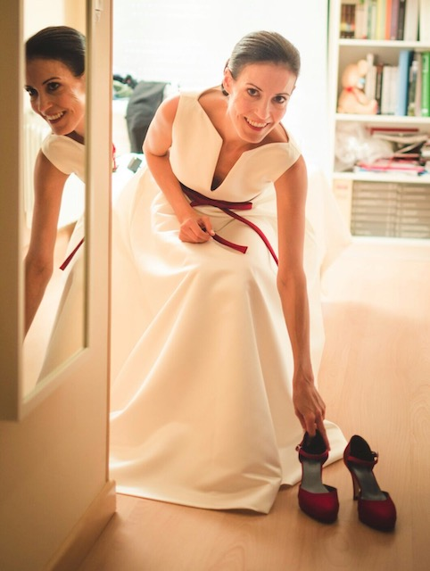
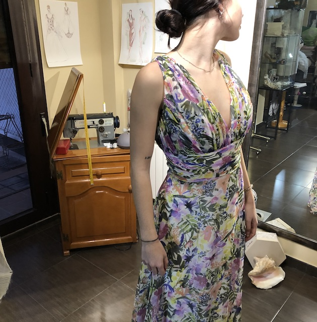
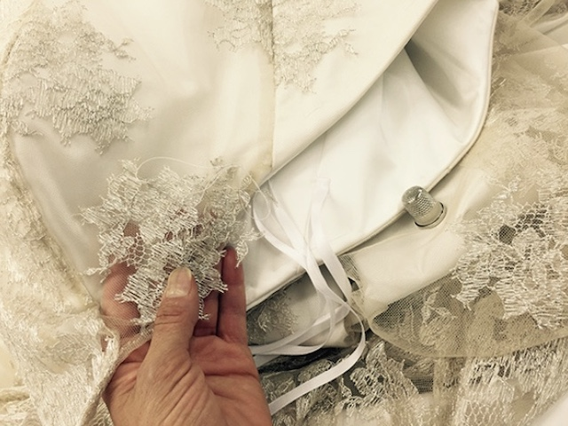
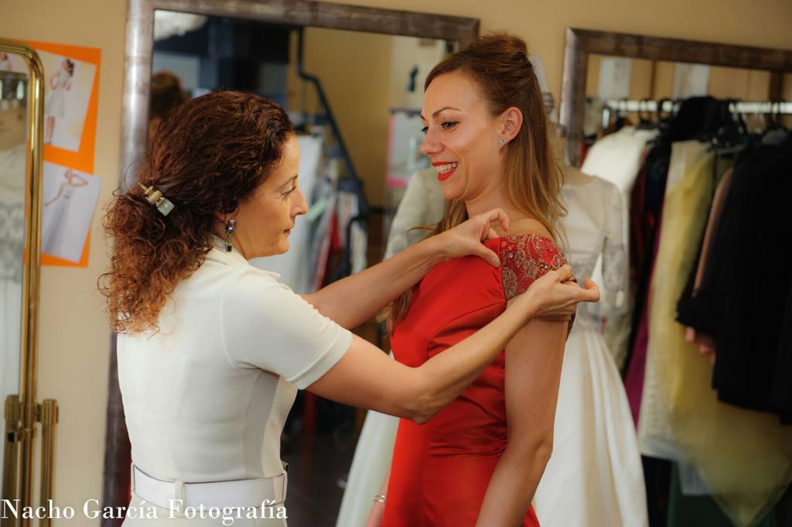

Exclusividad

Vestidos de Novia a Medida
Diseñamos tu vestido a partir de tus deseos, recuerdos o inspiraciones. Seleccionamos mikados, crepes de seda natural y encajes bordados para una caída perfecta.
Más de 30 años vistiendo emociones únicas. Confeccionamos sobre tu propia figura con tejidos nobles, seda natural y la devoción de la verdadera alta costura artesanal en Arroyomolinos (Madrid).
De maestría en patronaje, aguja experta y dedicación exclusiva al sector nupcial.
Hecho a mano en nuestro taller propio, sin intermediarios ni producción en cadena.
Atención íntima y confidencial con prueba privada para ti y tus acompañantes.
Especialidades del Atelier

Diseñamos tu vestido a partir de tus deseos, recuerdos o inspiraciones. Seleccionamos mikados, crepes de seda natural y encajes bordados para una caída perfecta.

Patrones favorecedores concebidos para resaltar tu elegancia en bodas y celebraciones señaladas. Colores armónicos, cortes impecables y acabados artesanales.

Ajustes milimétricos en escotes, colas, mangas y siluetas. Transformamos y modernizamos vestidos heredados o familiares preservando su valor sentimental.

El Alma de la Casa
En Elvira Mallenco cada puntada tiene nombre propio. Creemos en la costura pausada, en el diálogo abierto con la novia y en la tranquilidad que otorga saber que tu vestido está siendo confeccionado con manos expertas en Madrid.
«Un vestido no es solo una prenda: es el reflejo de tu personalidad en el día más inolvidable de tu vida.»
El Proceso Creativo
Acompañamos cada fase con mimo, calma y profesionalidad para que disfrutes de cada prueba.
Conversamos sobre tus gustos, el estilo de tu ceremonia y exploramos siluetas que potencien tu belleza natural.
Trazamos el diseño exclusivo y tocamos las muestras de crepes, tules de seda y encajes hasta hallar los perfectos.
Construimos el prototipo inicial en lienzo de prueba para ajustar las líneas directamente sobre tu figura anatómica.
Acabados interiores a mano, planchado artesanal y entrega impecable de tu vestido listo para brillar.
Elegir a Elvira fue la decisión más acertada de mi boda. Supo entender exactamente lo que quería desde el primer boceto y en cada prueba me hizo sentir tranquila, cuidada y especial.
Atención Personalizada
Atendemos siempre con cita concertada para dedicarte nuestro espacio en exclusiva. Cuéntanos qué sueñas vestir y nos pondremos en contacto contigo de inmediato.
Avenida de Francia, 113, 28939 Arroyomolinos, Madrid
+34 622 39 50 14
De Lunes a Sábado bajo cita previa
Gracias por ponerte en contacto con Elvira Mallenco Novias. Te llamaremos en breve para concertar tu fecha y hora en el atelier.